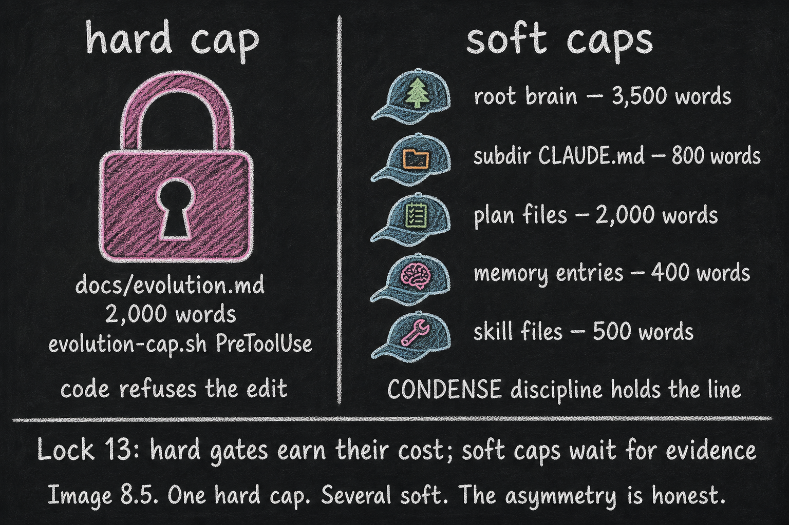

What's Enforced vs What's Discipline
Essay 8.5 — From Apprentice to Architect, Part 5 of 9.
Essay 8.4 opened the soft-to-hard migration arc — how a behavioral pattern travels from coaching voice to hardened hook to fossilized template. The arc raises an inverse question: which of the seed’s current limits are hard, and which are discipline pretending to be hard? This essay is the honest accounting.
A documented size limit and an enforced size limit are not the same thing. The prototype today is honest about the difference. ⓘ
A writer’s seed running manuscript-stage-gate jobs could pretend its "max 80,000 words per first draft" limit is enforced when in fact it’s CONDENSE discipline. The seed (and the writer) only catch the drift when a 95,000-word draft sails through. The same gap shape applies in every operator’s domain: the only way to know which limit is real is to test the gate empirically. The honest framing — "this is discipline; this is enforcement" — saves the operator from misplaced trust.
The Soft Caps
Root brain. Subdirectory CLAUDE.md. Plan files. Memory entries. Skill files. Several caps in the documentation table (currently five in the prototype) — all of them soft. None are policed by a code hook today. The brain stays within these caps because the CONDENSE phase compresses each layer cycle after cycle, not because a PreToolUse guard refuses an edit. ⓘ
The One Hard Cap
docs/evolution.md. Hard. A PreToolUse hook (evolution-cap.sh inside plugin_integrity) intercepts every edit to a plugin’s docs/evolution.md, counts the post-edit word count, and refuses the edit if it would push the file past the cap. The voice that fires names the cap, names the current count, and points the agent at the sibling files (docs/decisions.md, docs/lessons.md, docs/lessons-<topic>.md) where older content should migrate. The historian subagent has free edit access to all docs/*.md files, so it can absorb older sections into the siblings as the plugin’s narrative grows. ⓘ
Why the Asymmetry
One hard limit out of several. The pattern is consistent with the cost ladder. docs/evolution.md got the hard gate because the historian subagent re-narrates the file on every drift trip, the result is auto-injected into the agent’s context at every plugin unlock, and a bloated evolution.md would inflate the per-unlock context budget across the entire system. The cost of letting it grow was concrete; the gate paid for itself. ⓘ
The other size limits are soft because the measurement has not yet shown the soft control failing. Root brain stays at its cap because CONDENSE compresses it. Subdirectory CLAUDE.md stays at its cap because CONDENSE migrates content out to knowledge files. Memory entries stay short because operators write feedback rules tersely. Skills stay small because operations exceeding a small word count get extracted to their own skill file. None of this needs a hook today. The honest claim: it might tomorrow. The cost ladder will decide. ⓘ

The Deflation Gate — A Different Boundary
A second enforcement runs at a different boundary — the deflation gate inside phase_condense. At condense entry, a sensor snapshots the total bottom-section word count across every CLAUDE.md the cycle touched. At commit time, the script re-measures and refuses to advance unless eighty percent of those bottom-section words have been absorbed — a single threshold, the same for every job whether it runs once or across many cycles. The gate fires at commit, not at edit — which is the right boundary, because the question isn’t did this individual edit fit but did the cycle, taken as a whole, compress enough to graduate. ⓘ
The pattern reads cleanly: hard limits cost something to maintain (every gate adds friction, every gate adds tests), and the architecture won’t pay that cost until the soft form has demonstrably failed. The discipline isn’t more enforcement; it is enforcement where it pays for itself. The limit on this honesty is the operator’s: a seed that quietly bloats a soft cap will keep bloating it until the operator notices, because no code stops the drift.
The brain’s enforcement is asymmetric by design — hard where the cost pays for itself, soft where CONDENSE discipline still holds. The next essay widens the lens from the brain’s maturation to the operator’s — the three rough stages of growing from apprentice to journeyman to architect.
Essay 8.5 — From Apprentice to Architect, Part 5 of 9.
Previous: Essay 8.4 — Soft → Hard Migration — how a behavioral control travels from coaching voice to hook to template. Next: Essay 8.6 — The Maturation Arc — Apprentice, Journeyman, Architect — the operator’s three rough stages and the visible markers of each.
Comments